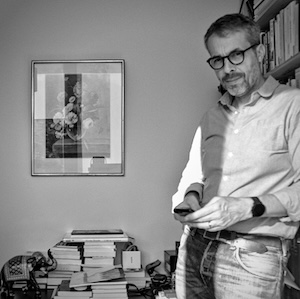

<style>
.uk-table td:first-child {
  text-align:center;
}
</style>

<nav class="uk-container">
<ul class="uk-breadcrumb">
<li><a href="../../index.html">Touché</a></li>
<li><a href="../../events.html">Events</a></li>
<li class="uk-disabled"><a href="#">Touché at CLEF 2024</a></li>
</ul>
</nav>

<main class="uk-section uk-section-default">
<div class="uk-container">
<div class="uk-container">
<h1 class="uk-margin-remove-top">Touché at CLEF 2024</h1>
<ul class="uk-list">
<li><span data-uk-icon="chevron-down"></span><a class="uk-margin-small-right" href="#index-synopsis">Synopsis/Call</a></li>
<li><span data-uk-icon="chevron-down"></span><a class="uk-margin-small-right" href="#index-tasks">Shared Tasks</a></li>
<li><span data-uk-icon="chevron-down"></span><a class="uk-margin-small-right" href="#index-registration">Registration</a></li>
<li><span data-uk-icon="chevron-down"></span><a class="uk-margin-small-right" href="#index-important-dates">Important Dates</a></li>
<li><span data-uk-icon="chevron-down"></span><a class="uk-margin-small-right" href="#index-keynote">Keynote</a></li>
<li><span data-uk-icon="chevron-down"></span><a class="uk-margin-small-right" href="#index-program">Program</a></li>
<li><span data-uk-icon="chevron-down"></span><a class="uk-margin-small-right" href="#index-organizing-committee">Organizing Committee</a></li>
</ul>
</div>

<div class="uk-container uk-margin-medium">
<h2 id="index-synopsis">Synopsis/Call</h2>
<p>Decision-making and opinion-forming are everyday tasks that involve weighing pro and con arguments for or against different options. Our goal is to foster the development of technologies that support people in decision-making and opinion-forming and to improve our understanding of these processes. We invite you to participate in the 5th Touché lab on argumentation at <a href="http://clef2024.clef-initiative.eu/">CLEF 2024</a> featuring three tasks.</p>

<h2 id="index-tasks" class="uk-margin-small-top">Shared Tasks</h2>
<ul>
<li><a href="{{ '/shared-tasks.html#human-value-detection' | relative_url }}">Human Value Detection</a></li>
<li><a href="{{ '/shared-tasks.html#ideology-and-power-identification-in-parliamentary-debates' | relative_url }}">Ideology and Power Identification in Parliamentary Debates</a></li>
<li><a href="{{ '/shared-tasks.html#image-retrieval-for-arguments' | relative_url }}">Image Retrieval/Generation for Arguments</a></li>
</ul>

<a class="uk-button uk-button-primary" href="https://clef2024.imag.fr/index.php?page=Pages/conference_registration.html">Register for Touché at CLEF</a>           

<h2 id="index-important-dates" class="uk-margin-large-top">Important Dates</h2>
<ul>
<li><strong>Dec. 18, 2023:</strong> CLEF Registration opens. [<a href="https://clef2024-labs-registration.dei.unipd.it/">register</a>]</li>
<li><strong>Apr. 22, 2024:</strong> CLEF Registration closes: late registration via submission system, see the respective task pages</li>
<li><strong>May   6, 2024:</strong> Approaches submission deadline [some tasks extended it; see there!]</li>
<li><strong>May  31, 2024:</strong> Participant paper submission [<a href="https://www.overleaf.com/latex/templates/notebook-for-the-touche-lab-at-clef-2024/czqbtmxjymfy">paper template + submission instructions</a>]</li>
<li><strong>June 24, 2024:</strong> Peer review notification</li>
<li><strong>July  8, 2024:</strong> Camera-ready participant papers submission</li>
<li><strong>Sep. 9-12, 2024:</strong> <a href="https://clef2024.imag.fr/">CLEF Conference</a> in Grenoble and Touché Workshop</li>
<li><strong>September 9, 2024:</strong> Touché Workshop</li>
</ul>

<h2 id="index-keynote">Keynote</h2>
<article class="keynote">
<header class="keynote-header">
<div class="keynote-speaker-image">

</div>
<div class="keynote-meta">
<div class="keynote-title">More than Gender-Bias: Understanding the Sociological Imagination of Large Language Models</div>
<div class="keynote-speaker"><a href="https://gillesbastin.github.io/" target="_blank">Gilles Bastin</a></div>
<div class="keynote-affiliation">Université Grenoble Alpes</div>
</div>
</header>
<div class="keynote-body">
<p>
With the groundbreaking launch of OpenAI’s ChatGPT in November 2022, swiftly followed by powerful counterparts such as Microsoft’s Copilot and Google’s Gemini in 2023, one of the most sophisticated algorithmic infrastructures ever developed in academic computer science research — large language models (LLMs) — was unveiled to the general public. Since then the chatbot has captivated a vast community of new users, drawn by its remarkable ability to produce accurate, coherent and flawless texts in response to their prompts. Hailed by AI enthusiasts and tech visionaries as a monumental leap toward automating the production of complex cultural artifacts like novels, news articles, speeches, letters, and songs, ChatGPT has simultaneously sparked fierce debates on critical issues including copyright, knowledge integrity, labor displacement, and misinformation.
Some recent studies have highlighted possible biases that could raise doubts about the neutrality of the chatbot and question its ability to fairly represent the social world. However, current limitations in bias research include an almost exclusive focus on predefined protected attributes like gender or race, or on political leaning.
</p>
<p>
In this talk, I will propose an alternative approach to this question that shifts the focus from describing the biases of ChatGPT to exposing the underlying social world's representation of the chatbot. For that purpose, I will advocate that we need to better understand the bot’s "sociological imagination"—its ability to identify consistent social structures behind repeated accounts of personal lives. I will also provide evidence that GPT’s sociological imagination is very narrow. While ChatGPT can recognise and represent numerous social structures from its training data (e.g., gender inequalities, reproduction of social position across generations...), it does not adequately represents the diversity of positions in the social space. In particular, its responses disproportionately favor senior executives and professionals.
This result raises concerns about the chatbot's neutrality and its ability to represent the social world fairly when used for generating texts or social sorting in cultural or academic contexts.
</p>
<footer>
<div class="keynote-bio expanded" id="keynote-bio-1">
<p>
Gilles Bastin is Professor of Sociology at the School of Political Studies, Université Grenoble Alpes. His research focuses on the sociology of culture and the media, sociological theory and the history of the social sciences, as well as the methodological, political and ethical aspects of data use in the social sciences.
</p>
</div>
</footer>
</div>
</article>

<h2 id="index-program">Program</h2>
<p>
Touché is part of the <a href="https://clef2024.clef-initiative.eu/index.php?page=Pages/programme.html">CLEF 2024 conference program</a>. All session times below are given in <a href="https://time.is/Grenoble">Grenoble local time (CEST)</a>. Touché is also featured in the CLEF Lab Overviews session September 9, 11:10-12:40, Room 1. Poster sessions are September 9 to 11, 15:30-16:30.
[<a href="https://ceur-ws.org/Vol-3740/#paper-322">proceedings</a>]
</p>
<table class="uk-table uk-table-divider uk-table-small uk-table-striped">
<tbody>
<tr><td colspan="2"><b>Monday, September 9, Room 5 (IMAG Réunion)</b></td></tr>
<tr><td><b>14:00-15:30</b></td><td><b>Touché Session 1 (Keynote and Task Overviews)</b></td></tr>
<tr><td>   14:00-15:00<br><i>Keynote</i>    </td><td>More than Gender-Bias: Understanding the Sociological Imagination of Large Language Models<br><i>Gilles Bastin</i></td></tr>
<tr><td>   15:00-15:10    </td><td>Overview of the Human Value Detection (ValueEval) Task [<a href="https://touche.webis.de/publications.html#kiesel_2024d">paper</a>]<br><i>Johannes Kiesel</i></td></tr>
<tr><td>   15:10-15:20    </td><td>Overview of the Ideology and Power Identification in Parliamentary Debates Task [<a href="https://touche.webis.de/publications.html#kiesel_2024d">paper</a>]<br><i>Çağrı Çöltekin (online)</i></td></tr>
<tr><td>   15:20-15:30    </td><td>Overview of the Image Retrieval/Generation for Arguments Task [<a href="https://touche.webis.de/publications.html#kiesel_2024d">paper</a>]<br><i>Maximilian Heinrich</i></td></tr>
<tr><td colspan="2"></td></tr>
<tr><td><b>15:30-16:30</b></td><td><b>Poster Session + Coffee break</b></td></tr>
<tr><td colspan="2"></td></tr>
<tr><td><b>16:30-18:00</b></td><td><b>Touché Session 2 (Participant Presentations and Invited Talk)</b></td></tr>
<tr>   <td>16:30-16:40</td>    <td>Hierocles of Alexandria at Touché: Multi-task &amp; Multi-head Custom Architecture with Transformer-based Models for Human Value Detection [<a href="https://touche.webis.de/publications.html#legkas_2024">paper</a>]<br><i>Sotirios Legkas, Christina Christodoulou, Matthaios Zidianakis, Dimitrios Koutrintzes, Maria Dagioglou, Georgios Petasis</i></td></tr>
<tr>   <td>16:40-16:50</td>    <td>Eric Fromm at Touché: Prompts vs FineTuning for Human Value Detection [<a href="https://touche.webis.de/publications.html#mishra_2024">paper</a>]<br><i>Ranjan Mishra, Meike Morren</i></td></tr>
<tr>   <td>16:50-16:55</td>    <td>Philo of Alexandria at Touché: A Cascade Model Approach to Human Value Detection [<a href="https://touche.webis.de/publications.html#yeste_2024">paper</a>]<br><i>Víctor Yeste, Mariona Coll-Ardanuy, Paolo Rosso</i></td></tr>
<tr>   <td>16:55-17:05</td>    <td>Arthur Schopenhauer at Touché 2024: Multi-Lingual Text Classification Using Ensembles of Large Language Models [<a href="https://touche.webis.de/publications.html#yunis_2024">paper</a>]<br><i>Hamza Yunis (online)</i></td></tr>
<tr>   <td>17:00-17:15</td>    <td>SCaLAR NITK at Touché: Comparative Analysis of Machine Learning Models for Human Value Identification [<a href="https://touche.webis.de/publications.html#k_2024">paper</a>]<br><i>Praveen K, Darshan R K, Chinta Tejdeep Reddy, Anand Kumar M (online)</i></td></tr>
<tr>   <td>17:15-17:25<br><i>Invited Talk</i></td>    <td>ValueEval for Politics: Perspectives from the European Commission's JRC<br><i>Mario Scharfbillig (online)</i></td></tr>
<tr>   <td>17:25-17:35</td>    <td>Trojan Horses at Touché: Logistic Regression for Classification of Political Debates [<a href="https://touche.webis.de/publications.html#s_2024a">paper</a>]<br><i>Deepak Chandar S, Diya Seshan, Avaneesh Koushik, P Mirunalini (online)</i></td></tr>
<tr>   <td>17:35-17:45</td>    <td>HALE Lab NITK at Touché 2024: A Hybrid Approach for Identifying Political Ideology and Power in Multilingual Parliamentary Speeches [<a href="https://touche.webis.de/publications.html#simhadri_2024">paper</a>]<br><i>Sevitha Simhadri, Mauli Mehulkumar Patel, Sowmya Kamath S (online)</i></td></tr>
<tr>   <td>17:45-17:55</td>    <td>Pixel Phantom at Touché: Ideology and Power Identification in Parliamentary Debates using Linear SVC [<a href="https://touche.webis.de/publications.html#hariharakrishnan_2024">paper</a>]<br><i>Janani Hariharakrishnan, Jithu Morrison S, P Mirunalini (online)</i></td></tr>
<tr>   <td>17:55-18:00</td>    <td>Closing<br><i>Johannes Kiesel</i></td></tr>
</tbody>
</table>

<h2 id="index-organizing-committee">Organizing Committee</h2>
<div data-uk-grid class="uk-grid uk-grid-match uk-grid-small thumbnail-card-grid">
{% include people-cards/kiesel.html %}
{% include people-cards/coltekin.html gender="male" %}
{% include people-cards/heinrich.html %}
{% include people-cards/froebe.html %}
{% include people-cards/potthast.html %}
{% include people-cards/wachsmuth.html %}
{% include people-cards/stein.html %}
</div>
<div class="uk-container uk-padding-large uk-padding-remove-bottom">
{% include organizations/clef-organizations-section.html year=2024 %}
</div>
</div>
</div>
</main>
